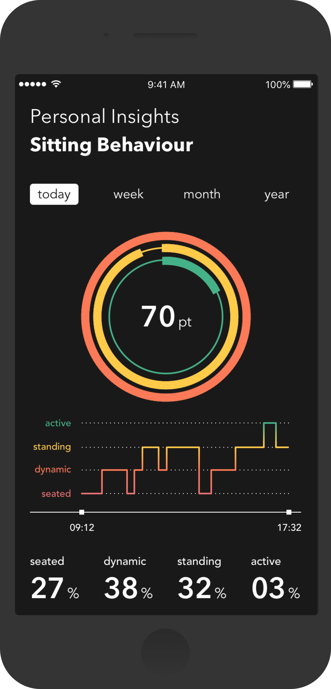

In het begin van de 20ste eeuw werd voor het eerst lean management toegepast om kantoormedewerkers zo min mogelijk tijd en energie te laten steken in alle processen die niet zouden bijdragen aan hun functie. Elke medewerker kreeg een bureau met lades, een eigen stoel en alle materialen die ze nodig hadden. Ook werden er plattegronden gemaakt met daarin divisies en afdelingen. Met deze ontwikkelingen werd de "Modern Efficiency Desk" geïntroduceerd. Inmiddels, honderd jaar later, bestaan er veel verschillende interpretaties van de kantooromgeving. Zo hebben we open offices, team spaces, cubicles, private of shared offices, work lounges en meeting rooms. Het enige aspect dat echter nooit is veranderd: de arbeid wordt altijd zittend verricht.
Het RIVM heeft aangetoond dat de gemiddelde kantoormedewerker 10,1 uur op een dag zit. Kantoormedewerkers brengen op een werkdag gemiddeld 77,0% van de tijd zittend door. Op niet-werkdagen zit dezelfde groep gemiddeld 62,9% van de tijd. In de kantooromgeving wordt langdurige sedentaire tijd als normaal beschouwd, sterker nog, de omgeving is hier volledig op ontworpen. Door specialisten op dit gebied, voornamelijk mensendieck-deskundigen, is de oorzaak van deze 'zit-epidemie' in kantooromgevingen de zitcultuur. Deze zitcultuur brengt ernstige gezondheidsproblemen met zich mee. Zo kan gebrek aan fysieke activiteit leiden tot hart- en vaatziekten. Te lang in een ergonomisch-onverantwoordelijke zithouding werken leidt op den duur tot musculoskeletale aandoeningen, ofwel skeletvergroeiingen. Als technologie-ontwerper zet ik mij in om welzijn te verbeteren door middel van (alledaagse) intelligente producten. Met Delta probeer ik fysiek welzijn in de moderne kantooromgeving te verbeteren en een aanzet te doen tot het ontwerpen van een interventie met het doel om deze ongezonde zitcultuur te doorbreken.
Op basis van de bevindingen uit zowel mijn literatuuronderzoek als veldonderzoek heb ik de volgende ontwerpvraag geformuleerd. De ontwerpvraag wordt ondersteund door meerdere design challenges.
In deze visualisatie kunnen kantoormedewerkers hun zitgedrag tijdens de werkdag bekijken. Zodra de medewerker gaat zitten wordt de gyroscoop uitgelezen en analyseert het de in-chair-movement, deze worden met kleurconnotaties weergegeven op een twaalf-uurs-klok.
Het getal in het midden van de cirkel staat voor het percentage van de tijd waarop de kantoormedewerker heeft gezeten, vergeleken met de gehele werkdag. De data in web-app toont hoe lang de gebruiker zit, staat en beweegt op een werkdag. Door bewustzijn in ergonomie te creëeren zal de intentie naar gedrags-verandering toenemen.
Om musculoskeletale aandoeningen af te remmen dient er een ergonomisch-verantwoorde zithouding aangenomen te worden. De Buoy van de Enrichers is van origine al een kruk dat perfect in de oplossing past. De bolling in het onderstel zorgt ervoor dat de gebruiker enigszins balanceert op de kruk, waardoor er een rechte rug en nek wordt aangenomen in de zithouding. Het afzwakken van de mogelijke hart- en vaatziekten vereist echter fysieke activiteit. Ook daar biedt de Buoy een oplossing. De kruk stimuleert in-chair-movement door wederom de bolling in het onderstel, waardoor kantoormedewerkers (onbewust) frequenter en heviger bewegen tijdens het zitten. Deze ergonomische kwaliteit is echter niet meetbaar, noch inzichtelijk. Middels een gyroscoop kan de in-chair-movement gemeten worden en door een knop in het zitvlak kan de zit-duratie uitgelezen worden.
Het kwantificeren van menselijk gedrag om inzichten te vergaren is een effectieve methode om een interventie kracht bij te zetten. De data die wordt gemeten in de Buoy wordt verwerkt en gevisualiseerd in de web-applicatie. Het ontwerp van de web-applicatie is gebaseerd op het ASE-model van Lechner. De gedragspsycholoog stelt dat de formule voor het aanleren van gedrag staat op een Attitude jegens het nieuwe gewenste gedrag, in dit geval dus dynamisch werken, de Social Influence die om ons heen speelt en de Efficacy van de interventie. De web-applicatie stimuleert de Attitude door real-time zitinzichten te tonen van het huidige zitgedrag. Na loop van tijd ziet de gebruiker zijn zitgedrag in een maandoverzicht en ontdekt wellicht een progressie, dit toont de Efficacy van de interventie.
